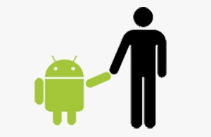

HISTÓRIA DO MASCOTE ANDROID
Provavelmente você sabe que o sistema operacional Android, mantido pelo Google, é um dos mais utilizados para dispositivos móveis em todo o mundo. Mas tavez você não saiba que o seu simpático mascote tem um nome e uma história muito curiosa? Pois acompanhe esse artigo para aprender muita coisa sobre esse robozinho
A PRIMEIRA VERSÃO
A primeira tentativa de criar um mascote surgiu em meados de 2007 e veio de um desenvolvedor chamado Dan Morril. Ele conta que abriu o Inkscape objetivo era apenas personificar o sistema apenas para a a sua equipe, não existia nenhuma solicitação da empresa para a criação de um mascote..
Essa primeira versão bizarra até foi batizada em homenagem ao seu criador: seriam os Dandroids.
SURGE UM NOVO MASCOTE
A ideia de ter um mascote foi amadurecendo e a missão foi passada para uma profissional da área. A ilustradora Russa Irina Blok uma maneira mais agradável
A ideia principal da Irina era representar tudo graficamente com poucos traços e de forma mais chapada. O desenho também deveria gerar identificação rápida com quem o olha. Surgiu então o Bugdroid, o novo mascote do Android.
A principal inspiração para os traços do novo Bugdroid veio daqueles bonequinhos que ilustram portas de banheiro para indicar o gênero de cada porta. Conta a lenda que a artista estava criando em sua mesa no escritório do Google e olhou para o lado dos banheiros e a identificação foi imediata: simples, limpo, objetivo..